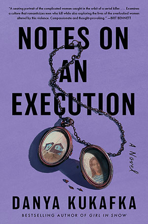

China Room - Sunjeev Sahota.

Notes on an Execution - Danya Kukafka.

absolutely devoured this book in (almost) one session. so good, beautifully written and tackles the subjet matter with such integrity and nuance.
Brought to tears on many many instances, cried through the last 50-100 pages, but really just breezed through the content. amazing.